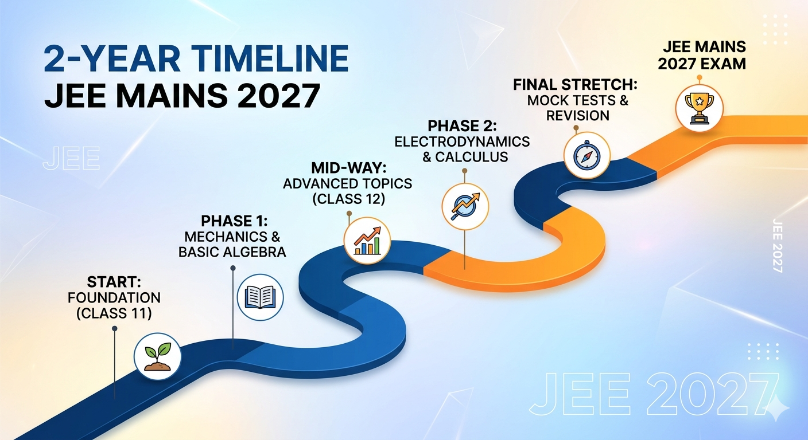
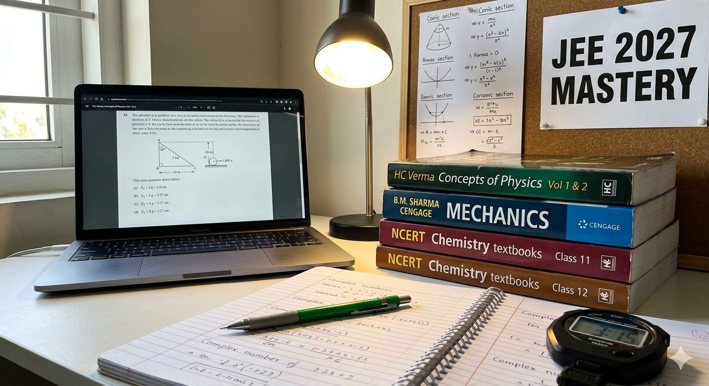
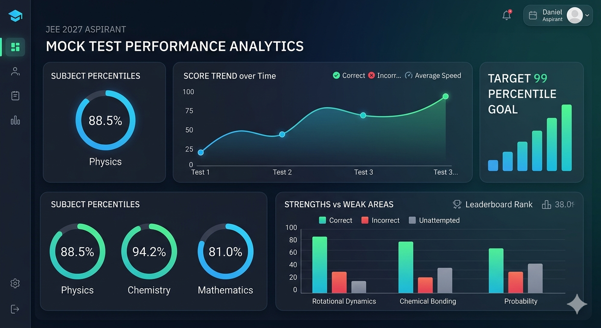

Preparing for JEE Mains 2027 is a long-term commitment that requires discipline, strategy, and the right resources. With nearly two years in hand, aspirants have a golden opportunity to build a rock-solid foundation. This guide will walk you through the essential steps to crack one of India's toughest exams with a top percentile.

Image Alt: jee-2027-roadmap-overview.jpg (A visual timeline for 2-year JEE preparation)
Before diving into books, you must know what you are up against. Typically, the exam consists of two papers, but for B.E./B.Tech aspirants, Paper 1 is the focus.
| Feature | Details |
|---|---|
| Subjects | Physics, Chemistry, Mathematics |
| Total Questions | 90 (75 to be attempted) |
| Marking Scheme | +4 for Correct, -1 for Incorrect |
| Mode of Exam | Computer Based Test (CBT) |
Focus on clearing basic concepts. In Physics, master Mechanics; in Chemistry, understand the Periodic Table and Chemical Bonding; in Maths, get comfortable with Algebra and Trigonometry. Do not leave any backlogs in 2025-26.
This phase starts in early 2026. You will cover Electrodynamics, Organic Chemistry, and Calculus. Start integrating Class 11th revision into your weekly schedule.

Image Alt: study-environment-setup.jpg (Creating the perfect environment for deep focus)
For JEE 2027, your success will depend 40% on knowledge and 60% on exam temperament. Start taking part-tests from the very first month.
Most students struggle with the dual pressure of Boards and JEE. The key is to remember that the NCERT syllabus is the common link. If you master NCERT for JEE, your Board preparation is 80% complete. Focus on writing skills for Boards in the last 2 months before the exams.

Image Alt: jee-mains-analytics.png (Tracking progress and identifying weak areas)
The journey to JEE 2027 is a marathon. There will be days when you feel low, but consistency is what separates a topper from an average student. Stick to your schedule, trust your teachers, and keep your goal in sight. You have the time; use it wisely!